12 Module snake prototype |
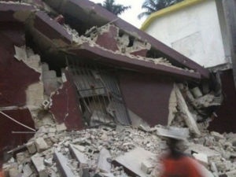 Photo courtesy of tumundovirutal.wordpress.com |

Paper reference
- Juan Gonzalez-Gomez, Javier Gonzalez-quijano, Houxiang Zhang, Mohamed Abderrahim, "Toward the sense of touch in snake modular robots for search and rescue operations". In Proc of the ICRA 2010 workshop on modular robots: State of the art. May-3rd, Anchorage, Alaska
Abstract
Snakes modular robots are good candidates for being used in Urban Search And Rescue (USAR) operations because of their flexibility, good adaptation to the terrain and small section. We propose to design and build snake robots that combine three capabilities: locomotion, climbing and grasping. The last one allows the robot to remove objects for clearing the path to the trapped people. The sense of touch is key to achieving these three capabilities. To implement it, our novel approach is based on the idea of touch rings and touch strips. In this paper some preliminary ideas are presented
Authors
- Juan González-Gómez, Javier González-Quijano, Houxiang Zhang, Mohamed Abderrahim
- Oral presentation: Juan Gonzalez-Gomez
Download
| Paper-ICRA-workshop-2010-snake-USAR.pdf | Paper (PDF) |
| Read On line in scribd | Paper On-line |
| Paper-ICRA-workshop-2010-snake-USAR.zip | Paper sources (Lyx) |
| Slides-ICRA-workshop-2010-snake-USAR.pdf | Slides, in PDF |
| Slides-ICRA-workshop-2010-snake-USAR.odp | Slides, in Openoffice format (ODP) |
| Slides on line | Read the Slides on-line in Scribd |
| IEEETran.zip | IEEE transaction latex class |
Editing in Lyx
- Download the IEEE transaction latex class
- Copy all the files into the directory: /usr/share/texmf/tex/latex/IEEEtran.
- Open a terminal an execute:
$ sudo texhash
- Run the Lyx processor and click on the Tool/reconfigure option
- The paper is ready for being edited with lyx!
Links
Log
| 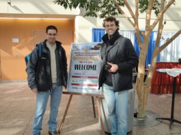 Fernando Herrero Carrón and Juan Gonzalez-Gomez at ICRA reception (click to enlage) |
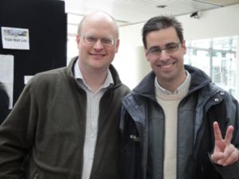 Per Sjoborg and Juan González(click to enlage) |


| 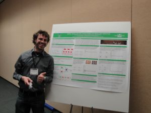 Fernando Herrero Carrón (click to enlage) |
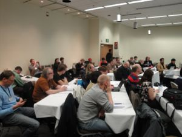 People attending the Workshop on modular robots (click to enlage) |


| 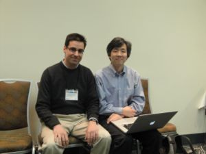 Mark Yim and Juan González (wow!)(click to enlage) |
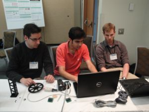 A demonstration of the CKbot modules(click to enlage) |


| 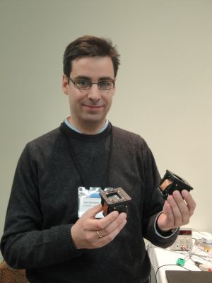 Juan Gonzalez with the Ckbot modules(click to enlage) |
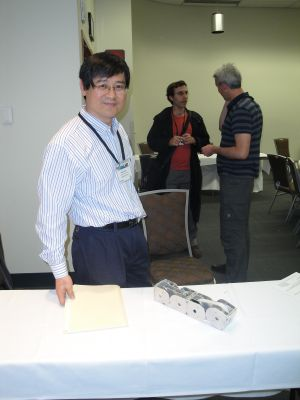 SuperBot modules(click to enlage) |


| 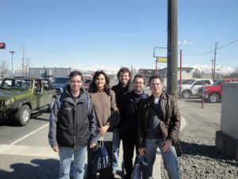 The Spanish team in Alaska! University of Malaga, University Autonomous of Madrid and Univesity Calos III of Madrid(click to enlage) |
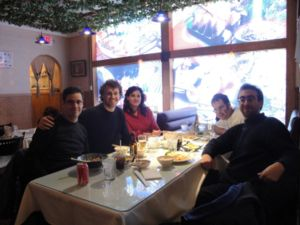 The Spanish team having lunch at a Japanese restaurant(click to enlage) |


Acknowledgments
- This research is partially supported by the HANDLE project, which has received funding from the European Community's Seventh Framework Programme (FP7/2007-2013) under grant agreement ICT 231640